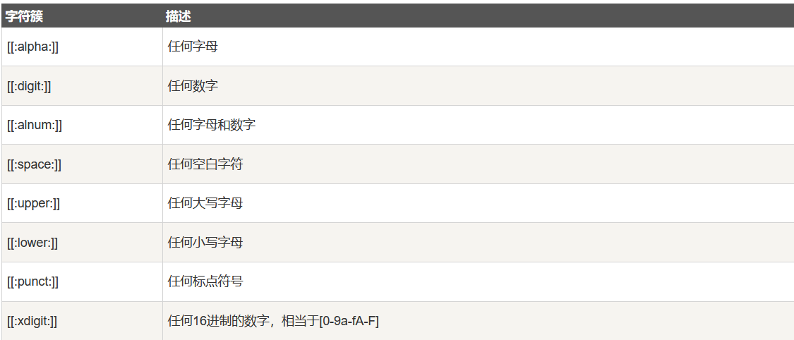
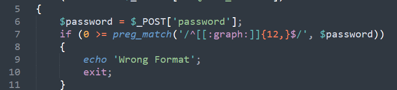
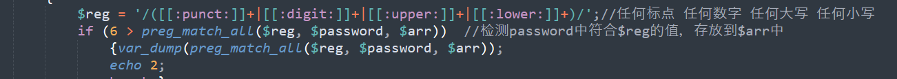
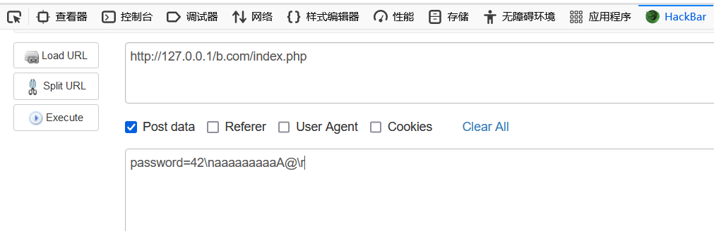
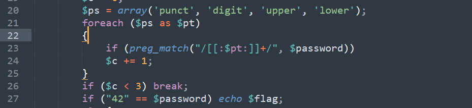
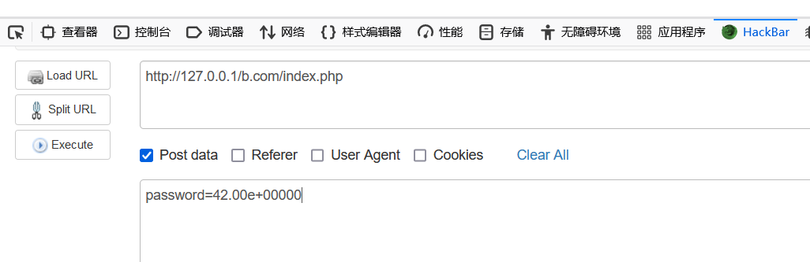

关于正则匹配的过滤不严
这一篇的漏洞分析在博客前面的dedecms前台任意用户已经做过了，这里就不重复写了。
ctf题
1
2
3
4
5
6
7
8
9
10
11
12
13
14
15
16
17
18
19
20
21
22
23
24
25
26
27
28
29
30
31
32
33
34
35
36
37
38
39
40
41
| <?php
include 'flag.php';
if ("POST" == $_SERVER['REQUEST_METHOD'])
{
$password = $_POST['password'];
if (0 >= preg_match('/^[[:graph:]]{12,}$/', $password))
{
echo 'Wrong Format';
exit;
}
while (TRUE)
{
$reg = '/([[:punct:]]+|[[:digit:]]+|[[:upper:]]+|[[:lower:]]+)/';
if (6 > preg_match_all($reg, $password, $arr))
{var_dump(preg_match_all($reg, $password, $arr));
echo 2;
break;}
$c = 0;
$ps = array('punct', 'digit', 'upper', 'lower');
foreach ($ps as $pt)
{
if (preg_match("/[[:$pt:]]+/", $password))
$c += 1;
}
if ($c < 3) break;
if ("42" == $password) echo $flag;
else{
echo 'Wrong password';
var_dump("42" == $password);
var_dump($password);
}
exit;
}
}
highlight_file(__FILE__);
?>
<?php $flag = "HRCTF{Pr3g_R3plac3_1s_Int3r3sting}";?>
|
参照以下正则表达式的含义：

第一次匹配：需要满足存在有12个以上的除了空格和tab键之外的字符：

第二次匹配，需要匹配够六次以上才能绕过，连续的数字、符号、大小写只能算一次。


第三次匹配，需要满足存在 符号、大写字母、小写字母、数字中的其中三个条件，

一开始我想的是使用弱比较42=”42fdsfsd”这种类型来绕过，但是规定给出的42是个字符串，所以查看了 wp想起来还可以使用科学计数法表示：
1
| payload： password=42.00e+00000
|
满足匹配条件。
